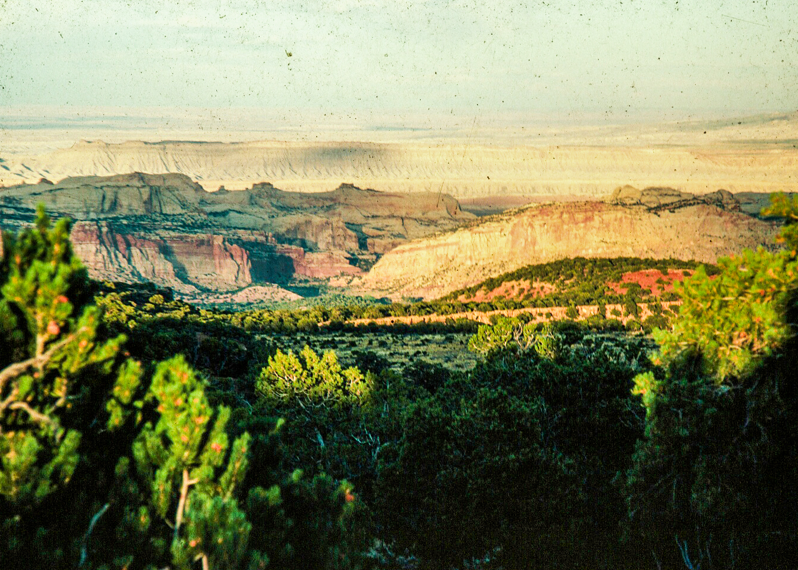
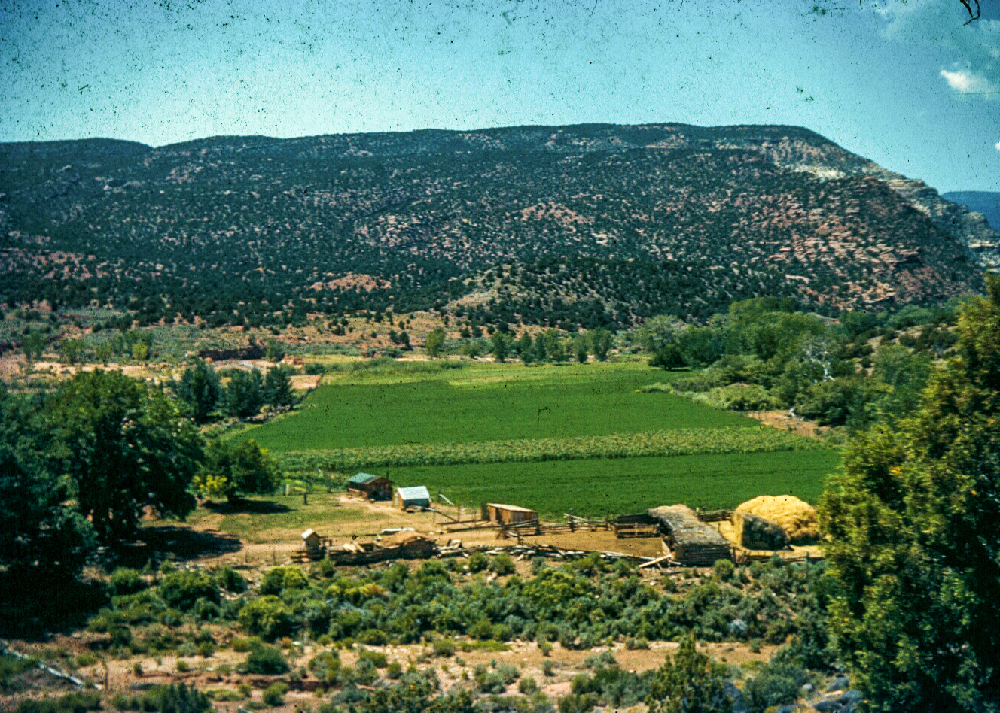

This video is about Lurt and Alice Knee, and the Sleeping Rainbow
Ranch as a guest ranch.

Ephraim Knowlton Hanks, is called on behalf of the president of the
Church of Jesus Christ of Latter-day Saints to settle colonies in
southern Utah. It was Ephraim's family who initially built a small
ranch near Pleasant Creek. Over the years they built a five bedroom
home, planted crops, and grew an abundance of fruit trees in the
area. In the Spring the fruit trees blossom, giveing inspiration to
the name 'Floral Ranch'. Floral Ranch remained in the family until
1916 before passing through ownership over the next few decades.
Lurt Knee and his first wife Margaret decide to purchase the land
with the intent of beginning a guest ranch after their car breaks
down on the property. By 1940, Lurt is able to build a series of new
structures northeast of the original Hank House and covert the
property into a day-tour operation. It is at this point that the
ranch officially obtains its new name, 'Sleeping Rainbow Ranch'.
According to Lurt Knee in a 1992 interview, when he first built the
ranch and realized it was adjacent to a national monument, his goal
was to make it into a National Park.
The ranch operates as a commercial tourist operation. The Great
Depression gratly affects tourism, but the industry recovers after
1945 during the time that Sleeping Rainbow Ranch comes into
fruition. The ranch begins to offer jeep tours, horseback riding
along trails, and overnight lodging. While operating the ranch, Lurt
marries Alice, his second and final wife.

Capitol Reef national monument is expanded, which includes 300 acres
of Lurt and Alice's property. By now, the Knees have built and
maintained an irrigation canal, a spring and pump water system, and
telephone lines on the property. The guest ranch has been expanded
to 15 outbuildings, pastures, and corrals. Lurt and Alice continue
to run the ranch together until deciding to close the operation in
1974. The Knees spend the rest of their lives on the property, and
Alice is considered its last resident after Lurt passes away in
1995. After Lurt's passing Alice quit-claims her rights to the
property, and the NPS assumes ownership.
In March of 2000, a deal is struck between the NPS and the Utah
Valley State College, or what is currently known as, Utah Valley University.
Today, Sleeping Rainbow Ranch is the locale of UVU's Capitol Reef
Field Station, sitting directly above the remnants of Sleeping
Rainbow Ranch. Every season, students from all areas of academia
come here to learn, build, and benefit off of all that this
beautiful land continues to offer today.